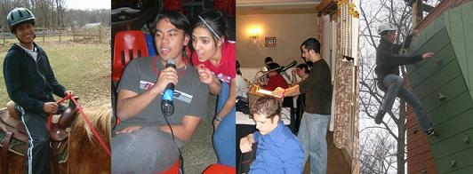

The Engineering Governing Council (EGC) is the governing body of the Rutgers University School of Engineering on the New Brunswick/Piscataway Campus. The EGC:
- Acts as the liasion between faculty, administration, alumni, and the students.
- Distributes funds to Engineering societies and organizations.
- Represents the interests of all Engineering students with a unified voice in the University Community.

Leadership. Friendship. Service.
Join the oldest, largest, and most active student government. Get involved today!
Next meeting: September 10, 2007
Council Meeting
(8:10 PM @ BCC 116)
Welcome to the 2007-2008 Engineering Governing Council website! Our transition has been seamless and we are ready to hit the ground running come September. However, as to not turn a blind eye to our most recent accomplishments and activities let’s take a look back at the last (and busiest) month of the 2006-2007 year!
- Fall 2007 Allocations were approved by the Council.
- The Leadership Conference was planned and run by the EGC at the University Inn on April 29th. Congratulations to all Teaching Award winners and a special thank you to Professor Yicheng Yu for having given an inspirational keynote speech!
- Congratulations to Senator Wajdi Kanj for having been elected as Student Representative to the Board of Trustees.
- Congratulations to Rohit Sodhia, Yigiter Izgordu, Andrew Miller, and Eleanor Okubor for having been elected as EGC Representatives to the Rutgers University Student Assembly (RUSA).
- Congratulations to Meghan Huber, Dave Chin, Curran Vars, Werner Born, and Ayaka Koshibe for having been elected as EGC Representatives to the Busch Campus Council.
- Congratulations to the Biomedical Engineering Department for having won the 2006-2007 Engineering Cup. We expect even more heated competition next fall!
Finally, here are just a few of the events to look forward to come September/October:
- Engineering Convocation (For freshman and societies)
- Freshman (2011) Class Representative elections
- EGC Weekend Retreat
- Engineering Cup
Have a great summer and look forward to a productive and prosperous year with the Engineering Governing Council!
[Posted: 5.19.07 3:11PM]
The results for the Spring 2007 elections are now available here. Congratulations to the newly elected Engineering Governing Council!
[Posted: 4.19.07 11:00PM]